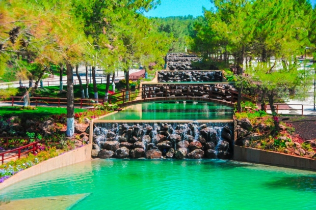
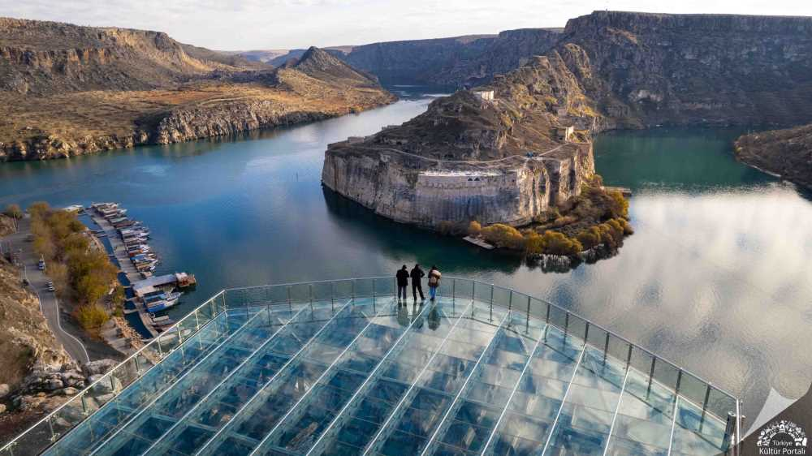
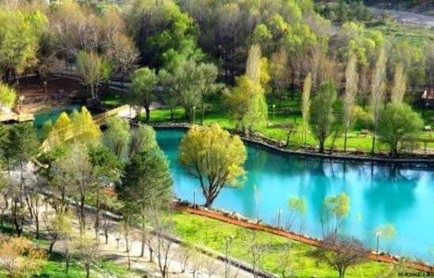
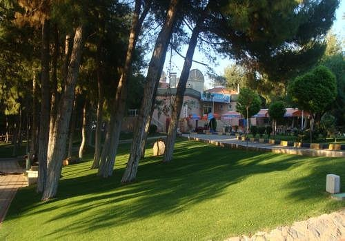

Şehrin en büyük yeşil alanı olan bu orman, piknik ve yürüyüş için harika bir doğa kaçamağı sunar. Ayrıca arkeolojik kalıntılara da ev sahipliği yapar.
Konum: Şehitkamil, Gaziantep
Giriş: Ücretsiz

Fırat Nehri üzerinde yükselen tarihi kale, tekne turları ve muhteşem manzarasıyla hem doğa hem tarih sevenleri büyülüyor.
Konum: Yavuzeli İlçesi, Gaziantep
Giriş: Tekne turu ücretli

Yürüyüş yolları, spor alanları ve yeşil manzarasıyla şehir içinde nefes alabileceğin sakin bir noktadır.
Konum: Alleben Deresi çevresi, Gaziantep
Giriş: Ücretsiz

Gaziantep Üniversitesi’ne yakın konumda yer alan bu orman, bisiklet ve kamp için oldukça uygundur. Doğayla iç içe sakinlik sunar.
Konum: Şahinbey, Gaziantep
Giriş: Ücretsiz